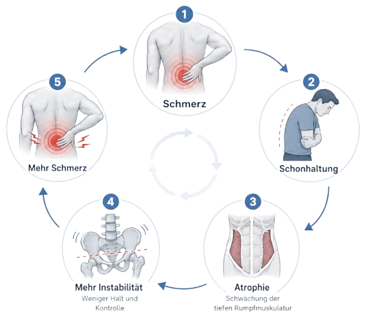
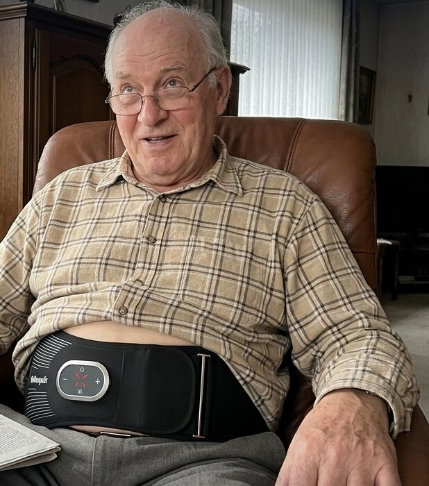

Es war ein Sonntag im Februar. Ich stand in der Küche meiner Eltern und hörte aus dem Wohnzimmer ein Geräusch, das ich von meinem Vater nicht kannte. Ein kurzes, unterdrücktes Stöhnen.
Er versuchte, aus seinem Sessel aufzustehen.
Beide Hände auf den Lehnen, nach vorn schieben, Anlauf nehmen. Einmal, zweimal, beim dritten Mal kam er hoch. Dann blieb er gebückt stehen, eine Hand im Kreuz, und wartete, bis es ging.
Er hat nicht gemerkt, dass ich in der Tür stand. Ich habe so getan, als hätte ich nichts gesehen, und bin zurück an die Spüle. An diesem Sonntag habe ich verstanden, dass mein Vater alt wird.
Der Mann, der mich auf den Schultern getragen hat
Mein Vater war 40 Jahre Maurer. Er hat Zementsäcke getragen wie andere Leute Einkaufstüten. Als ich klein war, hat er mich auf dem Rummel stundenlang auf den Schultern getragen, und das Haus, in dem ich aufgewachsen bin, hat er zum großen Teil selbst gebaut. Jetzt brauchte derselbe Mann drei Anläufe, um aus einem Sessel zu kommen.
Wenn ich heute zurückdenke, hat es nicht an diesem Sonntag angefangen. Es kam schleichend, über Jahre.
Erst hat er mit dem Kegeln aufgehört. „Die Bahn ist mir zu weit weg.“
Dann hat er den Garten meiner Mutter überlassen. Sie hat die Tomaten gepflanzt, er hat vom Stuhl aus zugeschaut.
Beim Spaziergang blieb er nach ein paar hundert Metern stehen und tat so, als würde er sich die Vorgärten der Nachbarn ansehen.
Auf der Fahrt zu uns, eine Stunde Autobahn, mussten wir auf halber Strecke anhalten. Er konnte nicht mehr sitzen.
Und nachts, das hat mir meine Mutter irgendwann am Telefon erzählt, ist er oft gegen drei Uhr aufgestanden und hat sich ins Wohnzimmer gesetzt, weil er im Bett keine Lage mehr gefunden hat.
Wenn man ihn fragte, wo es wehtut, fuhr er mit der flachen Hand quer über den unteren Rücken. Breit, wie ein Gürtel. An schlechten Tagen zog es ihm bis ins Bein.
Am Telefon klang trotzdem immer alles gut.
Mein Vater hat sich in seinem ganzen Leben nicht beschwert. Damit hat er auch jetzt nicht angefangen.
Ich habe mir trotzdem jeden Tag Gedanken gemacht
Was, wenn er stürzt? Oder eines Morgens nicht mehr aus dem Bett kommt und meine Mutter ihn nicht hochkriegt? Sie ist selbst 70. Und wie lange schaffen die beiden noch das Haus, das er gebaut hat?
Ich wohne eine Stunde entfernt. Ich habe zwei Kinder, einen Job, und meine Frau arbeitet auch. Ich war schon jeden zweiten Samstag bei meinen Eltern, um den Rasen zu mähen und die Getränkekisten in den Keller zu tragen.
Irgendwann habe ich mich dabei ertappt, wie ich im Auto ausgerechnet habe, wie das wird, wenn es jedes Wochenende ist. Wenn es mehr wird als Rasen und Kisten.
Dafür habe ich mich geschämt. Ich liebe meine Eltern, und trotzdem hatte ich Angst vor dem Tag, an dem ich sie pflegen muss.
Das Übungsblatt auf dem Kühlschrank
Am meisten hat mich fertiggemacht, dass es etwas gab, das er hätte tun können.
Der Orthopäde hatte ihm Physiotherapie verschrieben. Er ist hingegangen, pünktlich, wie er alles in seinem Leben pünktlich gemacht hat. Zum Schluss hat ihm die Physiotherapeutin ein Blatt mit Übungen mitgegeben. Brücke, Katzenbuckel, Knie zur Brust.
Beim nächsten Besuch hing das Blatt am Kühlschrank. Beim übernächsten lag es unter der Zeitung. Danach habe ich es nicht mehr gesehen.
Ich habe ihn darauf angesprochen. Erst vorsichtig, dann weniger vorsichtig.
„Papa, du musst die Übungen machen.“
„Mach ich doch.“
„Mama sagt, du machst sie nicht.“
„Soll ich mich in meinem Alter auf den Boden legen? Da komm ich ja nicht mehr hoch.“
Wir haben uns mehr als einmal deswegen gestritten. Einmal bin ich nach Hause gefahren und habe die ganze Stunde das Radio nicht angemacht. Ich war wütend auf ihn und noch wütender auf mich, weil ich einen 72-jährigen Mann mit Schmerzen angeschrien hatte.
Dazwischen habe ich gekauft, was mir eingefallen ist. Ein Massagekissen für den Sessel. Wärmepflaster. Einen Stützgürtel aus der Apotheke. Eine Rotlichtlampe.
Das Massagekissen hat er benutzt, solange ich da war. Der Stützgürtel liegt heute noch originalverpackt im Schrank.
An seinem Rücken hat nichts davon etwas geändert. Warum, habe ich erst später verstanden.
Mein Vater war nicht faul
Ich bin kein Arzt. Aber irgendwann habe ich angefangen zu lesen, nachts, wenn ich selbst nicht schlafen konnte.
Die Wirbelsäule wird von einer tiefen Muskelschicht gehalten, die direkt an den Wirbeln sitzt. Diese Muskeln spürt man nicht. Sie arbeiten einfach, beim Stehen, beim Gehen, beim Sitzen.
Wenn der Rücken wehtut, schont man sich. Wer sich schont, verliert genau diese Muskeln. Und wer sie verliert, hat beim Stehen, Gehen und Sitzen noch schneller Schmerzen. Ein Kreislauf, und mein Vater steckte seit Jahren mittendrin.

Die Übungen auf dem Blatt hätten diese Muskeln stärken können. Aber nur, wenn man sie über Wochen regelmäßig und sauber macht. Für einen Mann, der vom Boden kaum noch hochkommt und nicht spürt, ob er den richtigen Muskel trifft, war das nie realistisch.
Er hatte ein Programm für einen 40-Jährigen bekommen.
Training, bei dem man nur sitzen muss
Beim Lesen bin ich auf neuromuskuläre Elektrostimulation gestoßen, kurz NMES. Ich kannte bis dahin nur das Kribbelgerät vom Orthopäden. Das heißt TENS, es überdeckt Schmerzen für ein paar Stunden und trainiert keinen Muskel. Und ich kannte die Bauchgürtel aus der Werbung.
NMES setzen Kliniken und Rehazentren seit Jahrzehnten ein, zum Beispiel nach Operationen, wenn Patienten selbst noch nicht trainieren können. Ein Impuls bringt den Muskel dazu, sich anzuspannen, während man einfach sitzen bleibt.
Ein Sportwissenschaftler von der Deutschen Sporthochschule Köln, Christian Senfleben, hat dafür ein Gerät gebaut, das gezielt die tiefe Muskulatur im unteren Rücken trainiert. Getestet hat er es in einer Studie mit 60 Teilnehmenden über acht Wochen. Es heißt Wellenpuls LWS: ein Gurt, den man um den unteren Rücken legt.

Später habe ich gesehen, dass ihn auch das Gesundheitszentrum valmedica in Mülheim an der Ruhr in seinen Programmen einsetzt. Dort heißt es:
„Wellenpuls ergänzt unser Angebot um eine einfache, alltagstaugliche Möglichkeit, die Tiefenmuskulatur im Rumpf gezielt zu aktivieren. Die Anwendung ist niederschwellig und lässt sich super in unsere Betreuungskonzepte einfügen.“
valmedica, Gesundheitszentrum in Mülheim an der Ruhr
Man legt ihn an, schaltet ihn ein und sitzt 20 Minuten, zweimal pro Woche. Er wird warm, hat vier Tasten und schaltet sich am Ende selbst ab. Ein Handy oder eine App braucht man dafür nicht.
Ich habe das gelesen und gedacht: Das schafft sogar mein Vater.
Natürlich hatte ich Zweifel
Würde er so ein Ding überhaupt anziehen? Mein Vater hält schon sein Handy für eine Zumutung.
Und 489 Euro sind viel Geld für etwas, das vielleicht im Schrank neben dem Stützgürtel landet.
Dann habe ich zusammengerechnet, was mich die Samstage in den letzten zwei Jahren gekostet haben, an Benzin und an Zeit mit meinen eigenen Kindern. Außerdem gab es eine 30-Tage-Geld-zurück-Garantie. Wenn er ihn nicht benutzt, schicke ich ihn eben zurück.
Ich habe bestellt und direkt an meine Eltern liefern lassen. Das ging einfach über eine abweichende Lieferadresse.
„Das war's schon?“
Am Samstag darauf saß er im Sessel und schaute mich an, als wollte ich ihm eine Halskrause verpassen.
„Was soll das denn sein?“
„Rückentraining, Papa. Du musst nur sitzen bleiben.“
Ich habe die Elektroden mit etwas Wasser angesprüht, ihm den Gurt um den Rücken gelegt, festgezogen und eingeschaltet. Erst die Wärme. Dann die Stärke, Stufe für Stufe, bis er sagte: „Jetzt merk ich was.“
Dann hat er die Sportschau geguckt. Nach 20 Minuten hat sich das Gerät ausgeschaltet, und er sagte: „Das war's schon?“
Am Abend rief meine Mutter an. Er habe Muskelkater im Rücken. Er klinge fast zufrieden.
Was danach passiert ist
Ich hatte mit allem gerechnet, nur nicht damit, dass er dranbleibt.
Aber man kann dabei nichts falsch machen, und man muss sich nicht überwinden. Dienstags und freitags, vor dem Fernseher. Meine Mutter sagt, inzwischen erinnert er sie daran.
Nach drei Wochen sagte er am Telefon zum ersten Mal seit Jahren nicht „Geht schon“. Er sagte: „Besser.“
Nach ungefähr sechs Wochen stand ich wieder in der Küche meiner Eltern, und aus dem Wohnzimmer kam kein Stöhnen. Er stand einfach auf und ging zum Fenster.
Er geht wieder selbst zum Bäcker und steht wieder in seiner Werkstatt. Im Frühjahr hat er die Tomaten selbst gepflanzt.

Über Nacht ist das nicht passiert, und schlechte Tage hat er immer noch. Aber die Schmerzen sind weniger geworden, er bewegt sich mehr und wirkt wacher als in den Jahren davor.
Und ich? Ich fahre immer noch jeden zweiten Samstag hin. Letztes Mal hatte er den Rasen schon gemäht, bevor ich ankam, und war fast ein bisschen beleidigt, als ich den Mäher rausholen wollte.
Die Angst ist nicht ganz weg, Eltern werden nun mal älter. Aber zum ersten Mal habe ich etwas gefunden, das ihm hilft und über das wir nicht streiten müssen.
Wenn Sie gerade in der Tür stehen
Vielleicht lesen Sie das, weil Ihre Mutter am Telefon auch „Geht schon“ sagt und bei Ihren Eltern ein Übungsblatt irgendwo unter der Zeitung liegt.
Ich will Ihnen nichts versprechen. Ich kenne Ihre Eltern nicht. Es ist ein Trainingsgerät, und Training braucht Wochen. Bei Herzschrittmacher, Metallimplantaten im Rumpf, Epilepsie oder Herzrhythmusstörungen ist es nicht geeignet, und bei Vorerkrankungen sollten Ihre Eltern vorher mit ihrer Hausärztin oder ihrem Hausarzt sprechen.
Aber wenn Ihre Eltern die Übungen nicht machen, weil sie vom Boden nicht hochkommen oder nicht wissen, ob sie es richtig machen, dann ist das die eine Sache, die ich an Ihrer Stelle ausprobieren würde.
Bei uns hat vor allem geholfen, dass ich beim ersten Mal dabei war und wir die Stufe gemeinsam gefunden haben. Danach kam er allein zurecht. Wir haben feste Tage ausgemacht, Dienstag und Freitag vor derselben Sendung. Und weil das Paket direkt bei meinen Eltern ankam, musste niemand etwas abholen oder aufbauen.
Wenn Sie nicht dabei sein können: Zum Paket gehört ein persönliches Gespräch mit Christian, dem Gründer, und das kann auch direkt mit Ihrer Mutter oder Ihrem Vater stattfinden.
Zum Preis
Der Wellenpuls LWS kostet einmalig 489 EuroDer Wellenpuls LWS kostet regulär 489 Euro. Neukunden bekommen gerade 38 % Rabatt mit dem Code NEUKUNDE, dann sind es einmalig 299 Euro, ohne Abo und ohne Pads zum Nachkaufen. Dazu kommen das Gespräch mit Christian, ein kurzer Videokurs und ein E-Book mit Startplan. Versand ist kostenlos, die Lieferung dauert in der Regel zwei Werktage.
Und Sie haben 30 Tage Zeit. Merken Ihre Eltern keinen Unterschied, gibt es den vollen Kaufpreis zurück.
Alles Gute für Sie und Ihre Eltern,
Markus
P.S. Mein Vater weiß bis heute nicht, dass ich das hier aufgeschrieben habe. Er würde sagen: „Mach nicht so ein Theater.“ Aber vielleicht hilft es jemandem, der gerade in der Küche steht und zuhört.